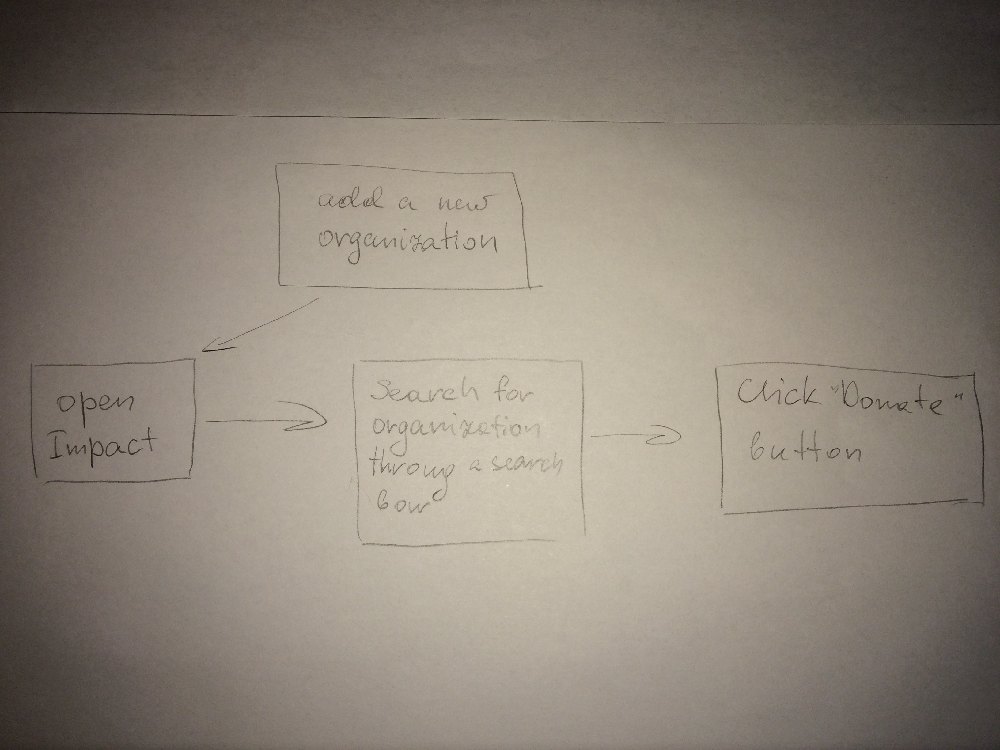
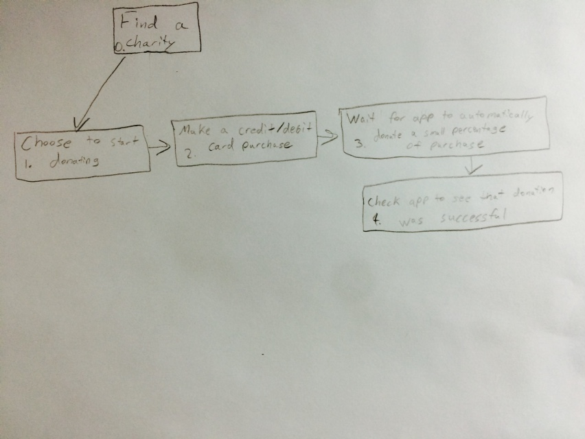
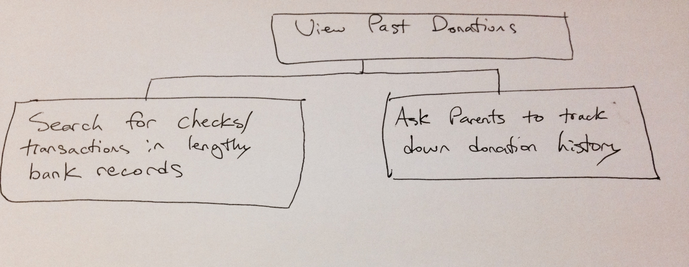

When it comes to donating to charities, many people find it hard to give away sizeable portions of their hard-earned income to organizations that claim to use the donations for a good cause. Part of this issue is that people lack an easy way to donate directly and easily to an organization they support. In addition, many people simply do not know about the charities and organizations that exist to address the causes they care about. Our theory at Impact is that people would be more willing to donate money to charities if they could do so in small payments, and in as few steps as possible. This concept will help to eliminate the typical deterring factors of donating money to charities by giving as much control to users as possible. We at Impact believe that there is a good heart in everyone, and that will be essential to the growth of our product.
Primary Stakeholders: Our target audience includes individuals between the ages of 18-35.
Jimbo Slice is a 23 year old recent Northeastern University business graduate working his first job out of college at a small company in Boston, MA. As he had a number of scholarships and significant financial aid at his university, Jimbo retains only a relatively low amount of student-loans to pay off in the next few years. In the past, Jimbo has volunteered for a number of animal-shelters throughout his college career. However, with the long hours he has been working at his company, he no longer is able to donate his time. Instead, he would like to contribute to the causes he has worked for in the past by donating money.
Jenny Walsh is a 28 year old small business owner located in San Francisco, CA. With the recent boom of her business, Jenny has finally settled all of her loans. She has heard of her friends donating their time and money to charities and organizations that they find interest in, so she has begun exploring options to do the same. Jenny has a number of family members that have been affected by cancer, so she wants to seek out the various organizations available to learn more about how her money will help them.
Secondary Stakeholders: Banks and charity organizations.
Our app has to collect information from each credit or debit card transaction from the banks of the user. All the money accumulated by the app is transferred to the charity organizations.
Tertiary Stakeholders:
This category includes the general public and businesses. The public can either support the business practices behind Impact, or oppose them based on the perceived benefits or risks of the application. Businesses, such as Starbucks, are included here because they facilitate transactions for users that will make donations.
Facilitating Stakeholders:
Khrystyna Reyes, designer and developer, Computer Science and Interactive Media
Matthew Freyre, designer and developer, Computer Science and Cognitive Psychology
Tim Webber, designer and developer, Computer Science and Cognitive Psychology
1) One of the major tasks of using Impact will be to search for a charity. We hope to make it easy for users to search and find a charity they are looking for.

2) Another major task is to start donating to a charity. Users will be given options to donate automatically upon credit/debit card use. For this task, we will be focusing on the automatic donation option.

3) Users should be able to view their past donations.

1) Jimbo wants to start donating to the organization his friend told him about. He picks up his phone and opens Impact app. He clicks on a search icon and enters the name of the local shelter “Animal Rescue League of Boston”. The list of different organizations with similar name appears on the screen. He picks the first one, since it was the one he was searching for. On the profile page of the Animal Rescue League he sees a button with “Donate” on it. He clicks on it and adds the organization to the donation list. App gives him a confirmation and a list of suggested charities based on the one he already added. One of those catches his eye, so he clicks on it to check out their profile. Jimbo notices the icon for non-kill shelter in the details section and he immediately decides to add this organization to his list as well.
2) Since Isaac has already downloaded the Impact app, has set up his method of payment, and chosen to fund a medical charity, he wants to start donating. He enjoys going to Duncan Doughnuts to buy a bacon, egg, and cheese sandwich every morning. He always uses his card to make this transaction. After going to pay the regular $3.75 for breakfast, he checks his phone to see a new notification from the Impact app. This notification says, “Donation of 25 cents to Medical Research successful!” Upon opening the app, he is greeted with a list of his most recent donations, and selects the one he made while buying his breakfast sandwich. This opens up a page displaying the charity and how much money he has donated to it in total. Satisfied that he had confirmed that 25 cents was donated successfully to the medical charity, he pockets his phone and decides to continue using the app to donate.
3) As Jenny is new to donating, she wants to examine exactly how much she is donating each week and month to ensure that she can afford it and cut down if necessary. Upon opening the Impact app, Jenny taps on the history navigation item. Immediately she is shown her recent individual donations for the transactions she has been making with her card. She then taps on the “totals” button. The screen now shows her past weekly donation totals. By tapping on the “Month” icon, Jenny is able to see how much she has been donating over the past few months. Having discovered that these numbers are within her budget, she decides to close the app and continue passively donating.
All users must be 18 or older to be eligible to use our app. In addition, users must have a credit or debit card to make donations.